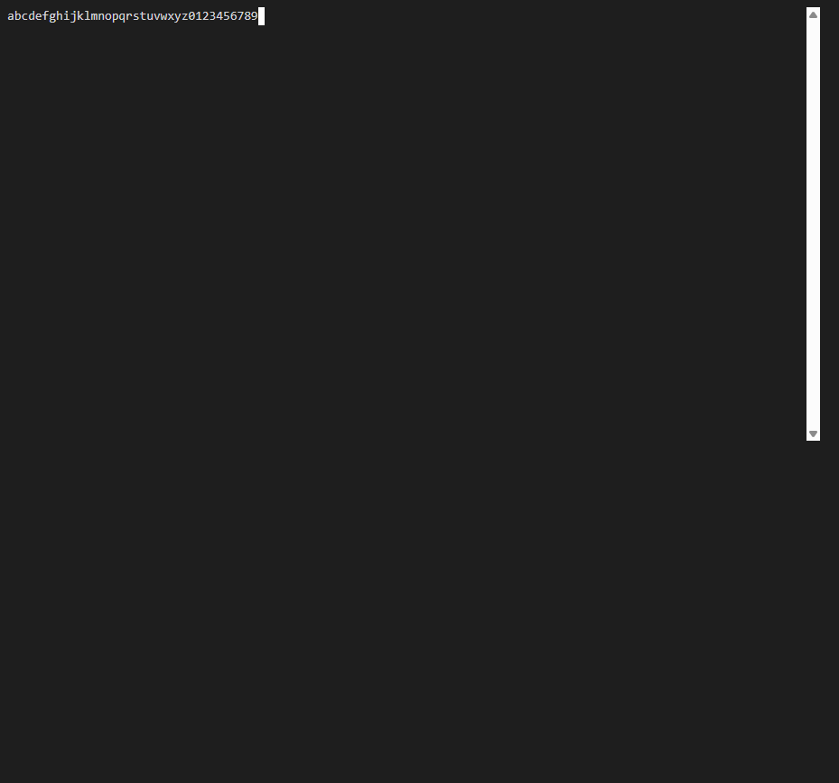
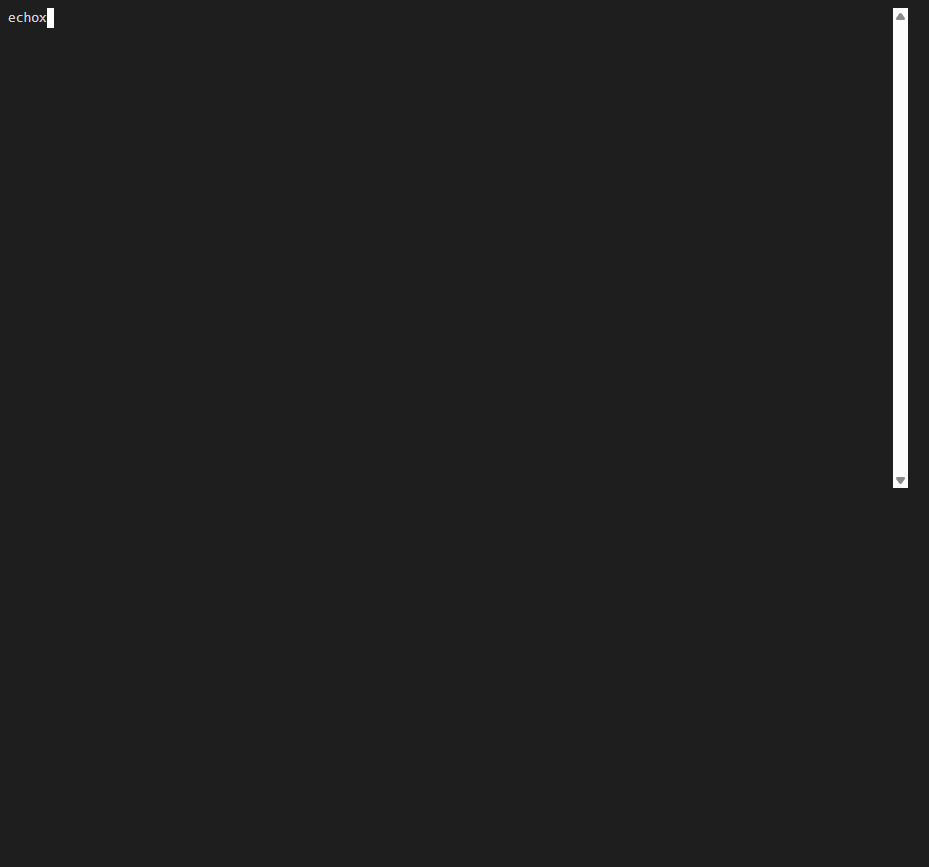
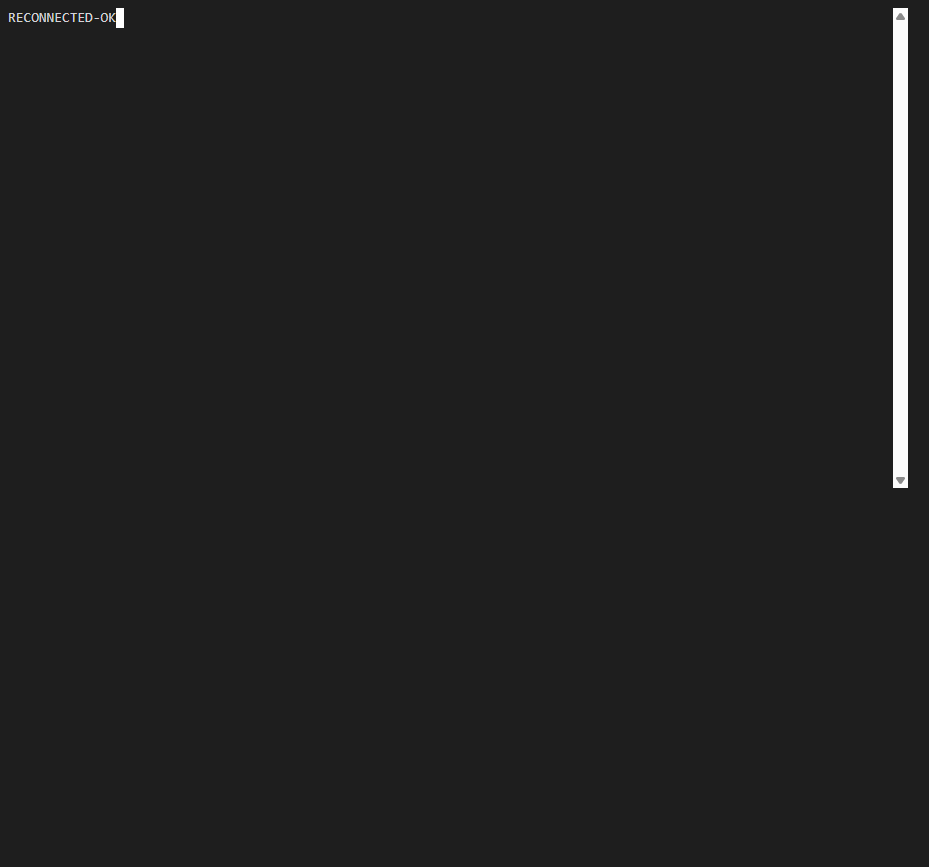

Repo: thefrederiksen/devthrottle Branch: issue-1021-serialize-terminal-keystrokes PR: #1034
This report is the QA Agent's own independent proof. The Developer Agent's report and screenshots were treated as context only, not as evidence. Every check below was reproduced by QA in a fresh isolated worktree.
QA built the PR branch in its own worktree and ran the full build gate. To verify the ordering
behaviour end-to-end, QA wrote an independent browser harness (not the Developer's): the REAL
compiled InteractiveTerminal class was bundled from the PR source and mounted in a real
browser (Playwright, trusted keystrokes) against a local same-origin server that reproduces the
pre-fix race - it applies an adversarial latency to every POST
/sessions/{sid}/prompt (earlier arrivals wait longer, so if two are ever in flight the later one
lands first) and echoes applied bytes back over the WebSocket so xterm renders exactly what the "PTY"
received. It records both the client dispatch order and the applied (PTY) order, plus the maximum
number of POSTs in flight at once.
| # | Criterion | Result | Evidence (Expected vs Actual) |
|---|---|---|---|
| a | Deterministic test reproduces the reorder before the fix and passes after; a 36-char string at 0 ms/key reaches the PTY exactly, in order. | PASS | QA reverted only the onData handler in its worktree to the old
fire-and-forget send and re-ran the suite: the two ordering tests FAILED, the modelled PTY
received 9876543210zyxwvutsrqponmlkjihgfedcba (fully reversed) and
x<esc>[A<esc>ohce. Restoring the fix, all 11 tests pass. The test is
therefore a genuine reproduction, not a trivially-passing test. |
| b | Fast-typed known 36-char string reaches the PTY exactly, in order, at fast typing speed. | PASS | Live browser, real trusted keystrokes into the real compiled terminal, adversarial-reorder
server. Server report:
appliedOrder = "abcdefghijklmnopqrstuvwxyz0123456789" (exact),
maxInFlight = 1, coalesced into 4 POSTs. With the old code the adversarial latency
would have reversed this and had up to 36 POSTs in flight. Screenshot below shows xterm
rendering the string in order. |
| c | Control keys (Esc, Ctrl+C, arrows) still work and stay correctly ordered relative to typed text. | PASS | Live burst "ec" + Ctrl+C + "ho" + Esc + ArrowUp + "x"
via trusted key presses. Server received exactly
"ec\x03ho\x1b\x1b[Ax" (Ctrl+C=0x03, Esc=0x1b,
ArrowUp=0x1b5b41) - verbatim and in order, maxInFlight = 1. |
| d | The interactive terminal still renders and reconnects. | PASS | Renders: screenshots for (b) and (c) show live PTY echo rendered by xterm. Reconnect: QA killed
the stream server; the terminal showed [stream lost, reconnecting via gateway ...
(attempt 2)...] and, after the server was restarted, auto-reconnected with no user action
and rendered fresh live content (RECONNECTED-OK). |
| e | Full build gate clean. | PASS | All four steps green in the QA worktree - see below. |
cockpit npm run build ......................... tsc --noEmit && vite build - built, 0 errors npm run lint (eslint .) ....................... clean (Gateway-only-ingress rule included) Gateway dotnet build -p:RunCockpitBuild=true .. Build succeeded. 0 Warning(s) 0 Error(s) dotnet build cc-director.sln .................. Build succeeded. 0 Warning(s) 0 Error(s) client-core vitest run (full suite) ........... 5 files, 72 tests passed (11 interactive, incl. 2 ordering)



Full client-core suite (72 tests) green - nothing adjacent broke. Change is confined to
one Cockpit client module (packages/client-core/src/terminal/interactive.ts): no
architecture container added/removed/renamed, no security posture (DT-*) change - the same single write
chokepoint (sendPrompt -> POST /sessions/{sid}/prompt, Gateway-only
same-origin ingress) is used; only the client-side ordering of those calls changed. No CenCon doc drift.